카카오웹툰 추천 인기 순위 TOP 30
카카오웹툰에서 지금 연재 중인 작품을 카카오웹툰 공식 인기 순위 순서로 모았어요. 네이버웹툰·카카오웹툰·레진코믹스에서 조건에 맞는 작품 944개 중 인기 순으로 30개를 골랐어요. 인기 TOP 3: 가드패스, 퀴퀴한 일기, 슬프게도 이게 내 인생
2026-11-08 기준 · 성인 작품 제외
내 취향으로 더 좁혀서 추천받기 →-
1
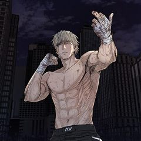
카카오웹툰가드패스
평소 먹는 것을 좋아해 뚱뚱하고 큰 체격을 가진 '임세준'. 그는 뚱보라는 놀림에도 신경 쓰지 않는 자존감이 높고 확고한 성격을 가졌다. 그에게 단 한 명의 친구 '서하진'. 그녀는 어릴 적부터 세준을 지켜주기 위해 늘 운동을 배워왔다. 어느 날 세준은 같은 반 일진과 트러블이 생기고…
사이다학원물배틀카카오웹툰에서 보기 → -
2
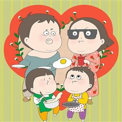
카카오웹툰퀴퀴한 일기
내 주변에 반드시 한 명은 있을 것만 같은, 어쩌면 나 같기도 한 그녀의 일기. 어느덧 40대의 아기 엄마가 된 주인공 이보람과 그의 군단들의 이야기이다. 너무나 시시하고 쩨쩨해서 누구에게 털어놓기도 멋쩍은 일들이 작은 마음을 가진 그들에겐 늘 뜨겁고 강렬하다! 마음속 깊이 숨어있는…
공감개그카카오웹툰에서 보기 → -
3카카오웹툰
슬프게도 이게 내 인생
"벌어먹고 살아야 하는 현생은 너무 힘들어!" 거친 현대사회에서 이리저리 치이며 어떻게든 적응해보려는 어리바리 슬이와 쉽지 않은 직장 생활에 약간 돌아버린 친구들의 슬프지만 즐겁게 살려고 노력하는 이야기
개그공감카카오웹툰에서 보기 → -
4
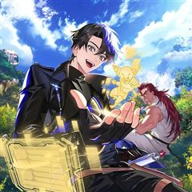
카카오웹툰SSS급 죽어야 사는 헌터
F급 말단 헌터 ‘김공자‘. 랭킹 1위 ‘염제‘를 부러워하던 어느 날, 무려 S+급 스킬을 얻는다. 하지만 기쁨도 잠시, 어째 스킬 내용이 이상하다?! 상대의 스킬 중 1개를 복사한다,까지는 좋은데… "뭐? 내가 죽어야만 발동된다고?!" 죽어야 사는 헌터의 인간찬가 <SSS급 죽어야…
눈물샘자극학원물회귀카카오웹툰에서 보기 → -
5카카오웹툰
템빨
[신영우 (유저 네임: 그리드)] 세계 최고의 가상 현실 게임 <SATISFY>. 현실에서나, 게임 속에서나, 불운은 항상 그의 곁을 맴도는데.... 퀘스트 수행 중 우연히 발견한 게임 속 로또, '파그마의 기서'. 20억 명이 넘는 유저 중 유일한 최강의 레전드리 직업으로 전직. "…
사이다학원물게임판타지카카오웹툰에서 보기 → -
6
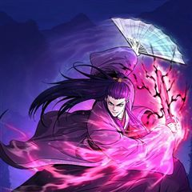
카카오웹툰관존 이강진
미친놈인가? 아니면 흔한 관심종자인가? 사람의 다름을 이해 못 하는 제자 이강진. 그리고 그걸 이해시켜주고자 하는 스승 곽노. 두 사제師弟의 따뜻한 휴먼스토리.
액션성장물카카오웹툰에서 보기 → -
7
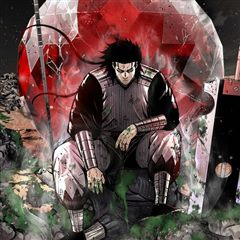
카카오웹툰레드스톰 - 왕의 귀환
피에 젖은 사막. 붉은 사막을 용납할 수 없던 한 소년. 소년은 사막의 무신이 되어 사막을 구하지만 이제는 세계가 피에 젖으려 한다. 무신은 이제 사막을 넘어 세계를 구하려 한다. “4년 만에 돌아온 그로우, 왕의 귀환. 이제는 사막에서 전쟁을 보여줘야 할 때다.”
액션성장물카카오웹툰에서 보기 → -
8
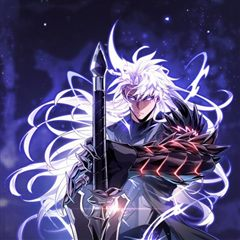
카카오웹툰픽 미 업!
그 누구도 던전의 끝까지 오르지 못한 극악의 난이도를 자랑하는 모바일 가챠 게임 <픽 미 업!(Pick me up!)> 마스터 오브 마스터라 불리는 세계 랭킹 5위의 마스터 '로키'는 던전을 깨던 중 정신을 잃게 된다. 깨어나 보니 레벨도 1, 등급도 1성인 <픽 미 업!> 속 영웅…
사이다액션게임판타지카카오웹툰에서 보기 → -
9
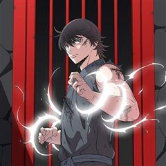
카카오웹툰무장 - 무투전
고려를 지키는 무신이라 불리는 권. 그의 어린 시절부터 이야기는 시작된다. 주인공 권과 그의 형 정은 고려에서 가장 강했던 무인이자 노비였던 만적의 아들들이다. 아버지 만적이 노비 해방 운동을 일으키지만 실패로 끝나고 죽음을 맞자 정과 권은 누군가로부터 계속해서 목숨을 위협받는다. 살…
자극적인액션복수극카카오웹툰에서 보기 → -
10
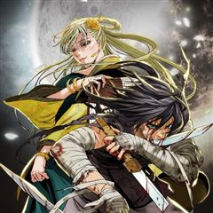
-
11
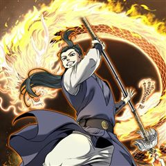
카카오웹툰로그인 무림
세상의 경계인 게이트에서 몬스터 사냥을 하는 헌터들이 잘 먹고 잘 사는 시대. 주인공 진태경은 최하위 헌터라 벌이가 시원찮다. 어느 날, 낡은 VR 게임기를 줍게 되고 접속하니 무림의 세계가 펼쳐진다. 우여곡절 끝에 현실로 돌아온 태경은 무림에서 얻었던 힘이 현실에서도 그대로 남아있음…
개그서스펜스액션게임판타지카카오웹툰에서 보기 → -
12카카오웹툰
유부녀 킬러
육아휴직을 마치고 회사로 돌아간 5년차 유부녀 유보나. 보나는 저격총을 쥔 채 호텔에 있는 타깃을 향해 총구를 겨눈다. "탕!" 복귀 후 첫 미팅은 암살업무, 보나는 유부녀 ‘킬러’이다. 보나는 자신의 딸 율이와 시어머니가 운영하는 치킨집을 찾았는데, 테이블 뒤편에서 고아인 보나를 험…
카카오웹툰에서 보기 → -
13카카오웹툰
황제궁 옆 마로니에 농장
'태양의 손'을 가진 농사 천재, 헤이즐 메이필드. 할아버지가 준 땅문서를 들고 설레는 마음으로 자신의 농장을 찾아가는데… "그 '대단히 높은 신분의 집주인'이… 황제였어?" 위대한 브라타니아 제국의 젊은 황제 이스칸다. 완전무결한 황궁을 꿈꾸던 그에게 닥친 최대 위기. "땅문서에 제…
힐링로판카카오웹툰에서 보기 → -
14
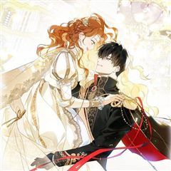
카카오웹툰이번 생은 가주가 되겠습니다
“…한번 해 보자. 내가 가주가 되는 거야.” 제국에서 제일가는 가문, 롬바르디의 사생아로 환생한 피렌티아. 게다가 이 가문은 막대한 부는 물론 외교와 문화까지 통달한 말그대로 제국의 역사 자체! 금수저 오브 금수저 인생 당첨! 앞으로는 탄탄대로일 거라 생각했는데…. 아버지는 돌아가시…
사이다로판회귀카카오웹툰에서 보기 → -
15
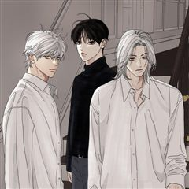
카카오웹툰무색의 빛
좋아하는 음악도 좋아하는 색깔도 모르겠는 무색무취 서진에게 오색 빛깔의 주환이 나타난다. 서진은 주환의 존재를 보는 순간 사랑에 빠지지만 주환의 마음은 알 수 없다. 가까워진 줄 알면 멀어지고 보이지 않을 때쯤 다시 곁으로 오는 주환에 서진은 정신을 차릴 수 없다. 주환에게 빠져 학교…
BL카카오웹툰에서 보기 → -
16
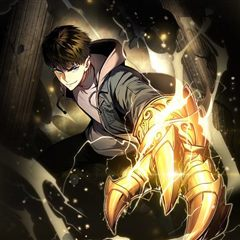
카카오웹툰영웅, 회귀하다
인류 최강의 영웅, 김성인. 모든 것을 내던지며 분투했지만 결국…… 세상의 멸망은 막지 못했다 하지만 그의 전설은 이제 시작이었으니 성인, 20년 전으로 회귀하다! “이번에는…… 반드시 잡는다.” 압도적인 재능과 경험으로 무장한 완전체 영웅의 레이드는 아직 끝나지 않았다!
액션회귀카카오웹툰에서 보기 → -
17
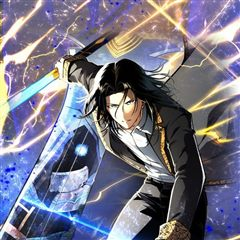
카카오웹툰검술명가 막내아들
진 룬칸델 대륙 최고의 검술명가, 룬칸델의 막내아들 룬칸델 역사상 최악의 둔재 비참하게 쫓겨나 허무한 최후를 맞이한 그에게 다시 한 번 기회가 주어졌다. “너는 이 힘을 어떻게 사용하고 싶더냐?” “저를 위해 사용하고 싶습니다.” 전생의 기억과 압도적인 재능, 그리고 신과의 계약 최강…
액션회귀카카오웹툰에서 보기 → -
18
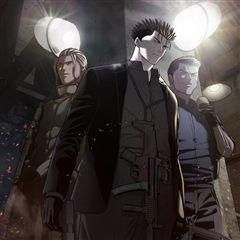
카카오웹툰갓 오브 블랙필드
"Who am I?" 프랑스 외인부대의 전설 '강찬'! 아프리카 전장에서 그를 상대한 자들은 공포와 경외를 담아 '갓 오브 블랙필드' 검은 땅의 신이라 불렀다. 하지만 수니파 추종 세력 SISS의 수뇌인 마살란 사살 작전에 투입된 강찬은 배후에서 날아든 의문의 총알에 전사하게 되고,…
서스펜스액션전쟁카카오웹툰에서 보기 → -
19
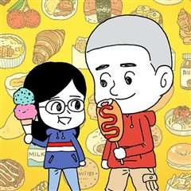
카카오웹툰오무라이스 잼잼
'음식'과 '가족'의 이야기를 담은 에세이 만화. 몇 개라도 먹을 수 있을 것 같은 '메추리알 조림', 빙글빙글 돌아가는 '회전초밥', 지구 반 바퀴 돌아 포르투갈에서 맛본 '에그타르트', 매콤상콤하게 볶아 입맛 도는 '마라샹궈', 짭짤한 밥도둑 '간장게장' 등 우리가 사랑하는 모든…
공감음식&요리카카오웹툰에서 보기 → -
20
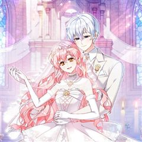
카카오웹툰악당들에게 키워지는 중입니다
즐겨보던 로판 소설의 엑스트라 소녀로 빙의한 지 1년 만에 내가 곧 쫓겨날 신세라는 걸 알게 됐다. 차라리 내 발로 집을 나가겠다고 했더니, “사실은 이 아이가 내 따님입니다. 그렇지, 따님?” 사이코패스 망나니 공자의 눈에 들어 버렸다? ‘놀이 후에 상대한테 준 돈이 섬 하나를 살…
미스터리로판육아물카카오웹툰에서 보기 → -
21
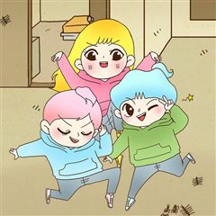
카카오웹툰반지하셋방
밝지만 엉뚱한 첫째와 무뚝뚝한 둘째, 인간 비타민 셋째까지. 청각장애인 어머니와 막노동꾼 아버지 밑에서 가난하게 자라났지만 밝고 유쾌하게 살아가는 세 자매. 그 세 자매 중 첫째와 둘째가 독립을 결심했다! 하지만 독립자금이 모자란 두 사람은 반지하에 자리를 잡는다. 천장에서 물이 새는…
공감개그카카오웹툰에서 보기 → -
22카카오웹툰
무한의 마법사
마굿간에 버려져 평민으로 키워진 아이, 시로네. 타고난 통찰력으로 글까지 깨우친 아이는 도시로 나간 어느 날 그토록 궁금해하던 마법을 경험한다. 그 길로 마법사를 꿈꾸게 된 시로네. 하지만 신분의 장벽이 두터운 이 곳은 아이에게 냉혹하고, 그는 채 어른이 되기도 전에 이 세상의 이면을…
미스터리학원물성장물카카오웹툰에서 보기 → -
23
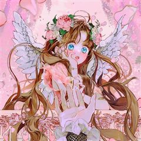
카카오웹툰엄마가 계약결혼 했다
리리카는 술주정뱅이 어머니를 모시고 하루하루 먹고 사는 빈민가의 소녀다. 그러던 어느날...... “꺄악, 뜨거워! 싫어!” 어머니가 비명을 지르며 잠에서 깨어나더니, “리리,살아있구나, 어려졌니?” 엉뚱한 소리를 하시고 “오늘이 며칠이지?” 정신을 못 차리시더니 “이럴수가, 돌아왔어…
힐링로판육아물카카오웹툰에서 보기 → -
24
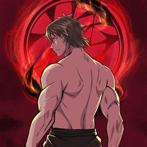
카카오웹툰대사형 선유
삼류 낭인 곽노의 손에 거둬진 아이들. 사제관계를 맺고 아이들은 어설프게나마 무공과 보법 수련을 하며 각자의 꿈을 꾼다. 먹고살기 위해 곽노는 늘 자리를 비워야 했고, 아이들 중 맏이인 선유는 사제들을 돌봐야 한다. 그는 대사형大師兄이다.
눈물샘자극액션가족카카오웹툰에서 보기 → -
25
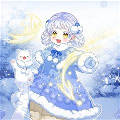
카카오웹툰흑표 가문의 설표 아기님
잡종으로 태어나 외할아버지에게 학대당하다가 죽었다. 내가 가문의 이능을 발현하지 못한 쓸모없는 아이였기 때문에. 기억을 가진 채 과거로 돌아왔지만, 선택지는 과거와 그리 다르지 않았다. 이대로 살다가 전생과 똑같이 학대당해 죽거나, 나를 끔찍하게 싫어하는 아빠를 찾아가거나. '다시 죽…
로판인외존재카카오웹툰에서 보기 → -
26
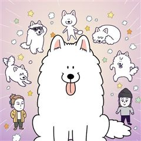
카카오웹툰극한견주 시즌2
약 먹기 싫어! 병원 가기 싫어! 내가 좋아하는 것만 하면서 살 거야! 9살 솜이, 어엿한 중년견이 되었으니 모든 게 순조로울 줄 알았다. B.U.T 우끼빡기도 안 하고, 미사일 발사도 안 하지만 어쩐지… 지능캐가 되어버렸다고나 할까? 그렇다고 물러날 수는 없다. 집사 10년차, 무엇…
개그힐링카카오웹툰에서 보기 → -
27
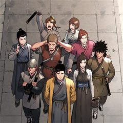
카카오웹툰군림천하
"너만은 꼭 군림천하 해야 한다!” 그 한마디로 진산월의 운명이 결정됐다. 스물세 살, 그는 종남파의 장문인이 되었다. 남은 이들은 단 8명의 제자뿐. 한때 천하제일을 꿈꿨지만, 지금은 명맥만을 잇는 문파. 사부의 유지를 위해, 살아남기 위해— 진산월은 비정한 강호로 나아간다.
자극적인성장물액션카카오웹툰에서 보기 → -
28
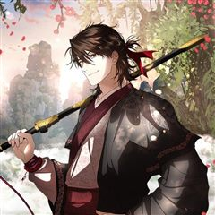
카카오웹툰무당기협
무림 사파의 수장인 혁련무강은 죽기 직전 불로초를 삼킨 후 눈을 떠보니 무당파 도동의 몸에 빙의되었다. 예전에 본인이 붕괴 직전까지 몰고 갔던 무당파에서 '진무'라는 이름의 도사로 다시 살게 된 그는 무당의 '양의신공'을 전수받기 위해 애쓰다 보니 뜻하지 않게 무당이 부흥하는데...!
사이다액션빙의카카오웹툰에서 보기 → -
29카카오웹툰
데뷔 못 하면 죽는 병 걸림
4년 차 공시생, 낯선 몸에 빙의해 3년 전으로 돌아왔다. 그리고 그의 눈앞에 나타난 갑작스러운 상태창의 압박! [돌발!] [상태이상: '데뷔가 아니면 죽음을!' 발생!] 돌연사 위협 때문에 팔자에도 없던 아이돌에 도전하게 된 주인공의 대환장 일지. ※특이사항: 빙의 전 아이돌 데이터…
설렘폭발빙의카카오웹툰에서 보기 → -
30
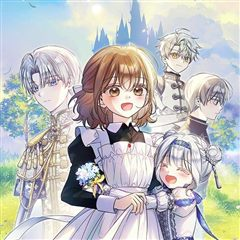
카카오웹툰막내 공녀의 총애를 독차지했더니, 모두 내게 집착한다
정보 길드의 일급 요원으로 임무를 수행하던 중 검에 가슴이 꿰뚫렸다. 영락없이 죽었다고 생각했는데……. 8살, 지옥 같던 보육원 시절로 돌아왔다?! “안농, 난 다나야!” 마침, 내 앞에 나타난 엘라드 공작가의 막내 공녀 다이애나. 지난 생의 후회를 반복하지 않기 위해 다이애나를 보살…
성장물미스터리로판육아물카카오웹툰에서 보기 →